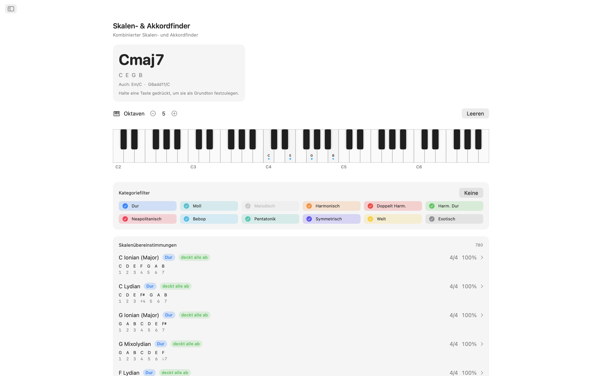
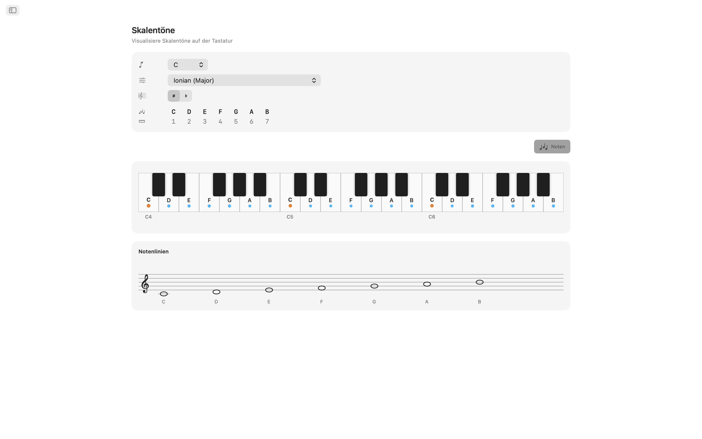
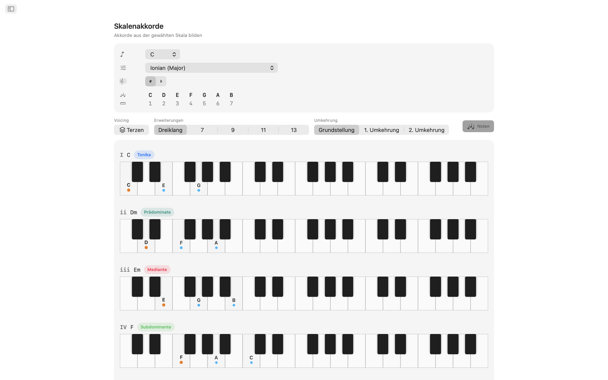
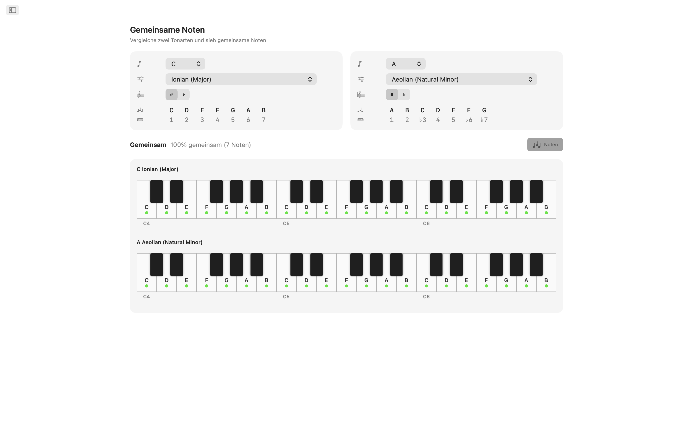
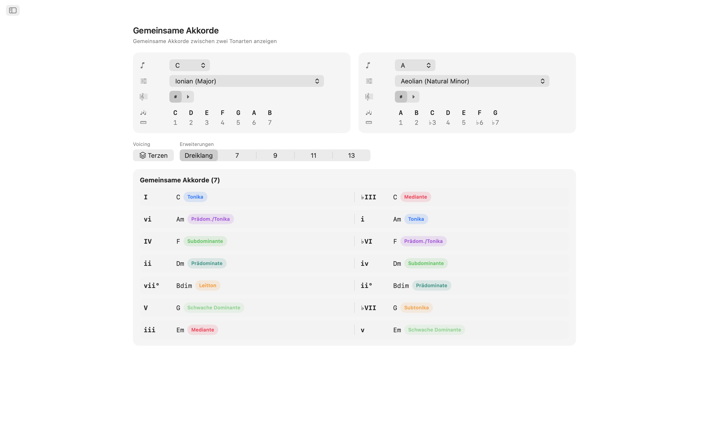
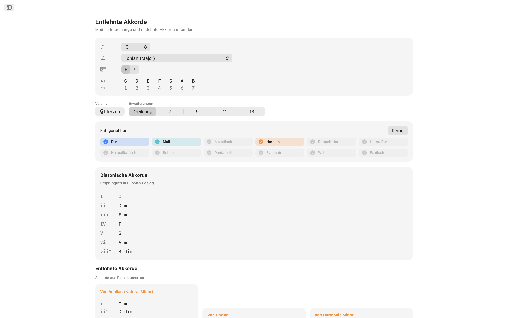
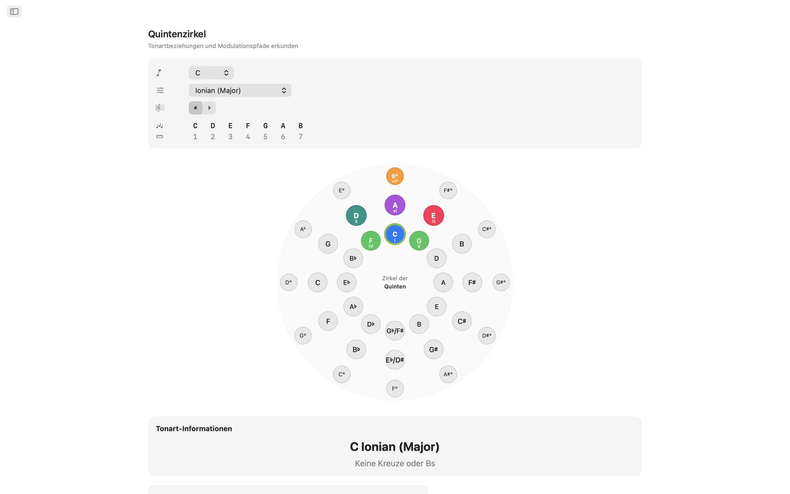
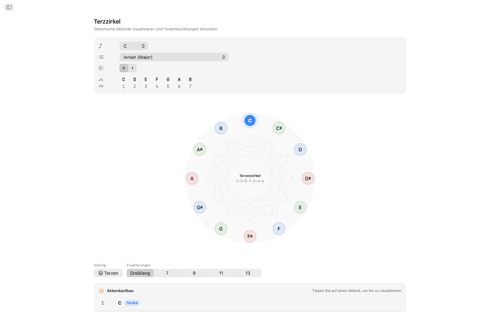
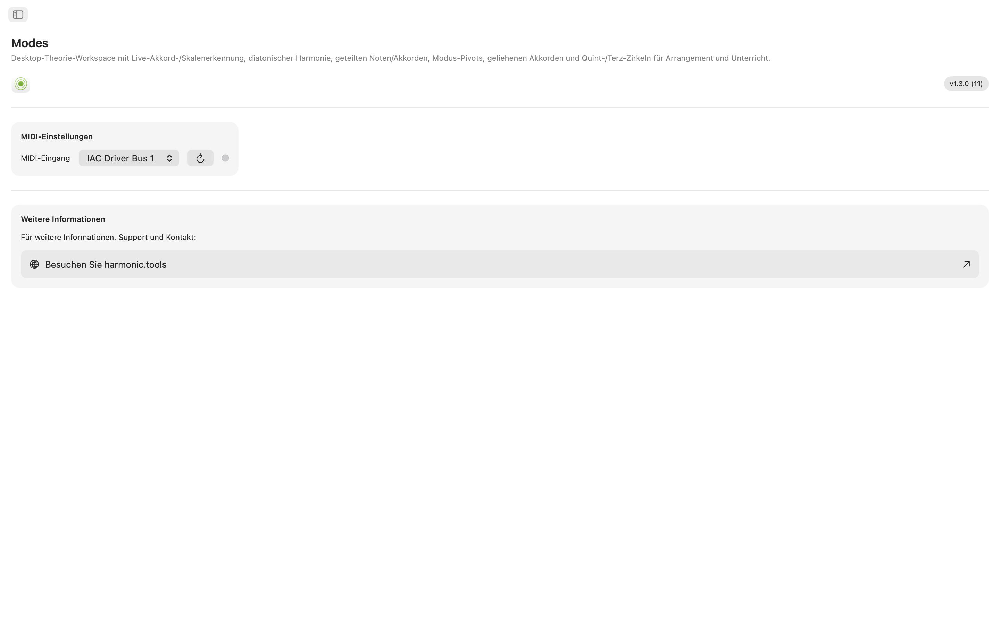

Modes für macOS
Ein praktisches Musiktheorie-Labor für macOS. Ob Sie einen Song schreiben, eine Unterrichtsstunde vorbereiten oder neues harmonisches Terrain erkunden — Modes bietet Ihnen sofortigen Zugriff auf Tonleitern, Akkorde, Voicings und Modulationswege — alles in einer übersichtlichen App mit Seitenleisten-Navigation, die neben Ihrer DAW Platz findet.
- Tonleiter- und Akkorderkennung mit MIDI + Bildschirmtastatur
- 61 Tonleitern · 21 Akkordtypen · 8 Voicing-Familien
- Gemeinsame Töne, gemeinsame Akkorde, entliehene Akkorde
- Interaktiver Quintenzirkel + Terzenzirkel
Screenshots
Enthält Screenshots im hellen und dunklen Modus, die dem Design der Website folgen.











Funktionen
- Tonleiter- und Akkorderkennung: Spielen Sie Töne auf der interaktiven Mehrfach-Oktav-Tastatur oder schließen Sie einen MIDI-Controller an. Modes erkennt den gespielten Akkord in Echtzeit: Dur, Moll, vermindert, übermäßig, erweitert, Suspended und mehr. Es ordnet jede passende Tonleiter nach Tonabdeckung ein. Filtern Sie Ergebnisse nach Tonleiter-Kategorie (diatonisch, melodisch Moll, harmonisch Moll, pentatonisch, Bebop, symmetrisch, Weltmusik und mehr), um den gewünschten Klang zu finden.
- 61 Tonleitern und Modi: Von den sieben diatonischen Modi über melodisch Moll, harmonisch Moll, doppelt harmonisch, neapolitanisch, Bebop, Pentatonik, Blues, Ganzton, vermindert, übermäßig bis hin zu Weltskalen wie Hirajōshi, Kumoi, In Sen, persisch und enigmatisch. Jede Tonleiter wird mit Intervallen dargestellt und auf der Tastatur hervorgehoben.
- Töne in der Tonart: Wählen Sie einen beliebigen Grundton und eine Tonleiter, um jeden Ton in der Tonart über zwei Oktaven hervorgehoben zu sehen. Erkennen Sie sofort, welche Töne zur Tonleiter gehören und wo der Grundton liegt.
- Stufenakkorde: Erzeugen Sie diatonische Dreiklänge oder Septakkorde für jede Stufe Ihrer gewählten Tonleiter. Sehen Sie römische Ziffern, Akkordnamen, harmonische Funktions-Badges (Tonika, Subdominante, Dominante und über 30 detaillierte Labels) sowie Tastatur-Darstellungen mit Voicings — alles übersichtlich zum einfachen Vergleich.
- 8 Voicing-Typen: Bauen Sie Akkorde in Terzenschichtung (Tertian), Sus2, Sus4, Sext, Add, Quart, Quint und Power-Voicings. Wählen Sie von Dreiklängen bis Tredezimakkorde — jede Erweiterung wird automatisch beschriftet.
- Gemeinsame Töne und Akkorde: Vergleichen Sie zwei Tonarten nebeneinander. Sehen Sie, welche Töne sich überschneiden, welche einzigartig sind und welche Akkorde beide Tonarten teilen. Unverzichtbar für sanfte Modulation und Reharmonisierung.
- Entliehene Akkorde: Analysieren Sie Ihre Tonart auf native diatonische Akkorde sowie alle entliehenen Optionen aus parallelen Modi, gruppiert nach Quell-Modus. Entdecken Sie neue harmonische Farben, ohne Ihr tonales Zentrum zu verlassen.
- Quintenzirkel: Interaktiver Doppelring-Kreis (Dur außen, natürlich Moll innen). Klicken Sie auf einen Sektor, um die Tonart zu wechseln. Sehen Sie auf einen Blick Dominant-, Subdominant-, Parallel-, Verwandtschafts- und Nachbartonart-Beziehungen mit Modulationsschwierigkeits-Badges und Vorzeichendetails.
- Terzenzirkel: Erkunden Sie chromatische Mediant-Beziehungen auf einem verminderten Zyklus-Diagramm. Dur- und Moll-Tasten für jede Tonhöhenklasse zeigen Mediant-, Parallel- und Verwandtschaftsverbindungen. Ideal für die Planung filmischer und neo-riemannscher Modulationen.
- MIDI-Unterstützung: Schließen Sie ein beliebiges kompatibles MIDI-Keyboard oder Controller an. Gespielte Töne werden mit Bildschirmklicks für nahtlose Erkennung kombiniert.
Für Ihren Desktop entwickelt
- Funktioniert komplett offline — kein Konto, keine Werbung, kein Tracking
- Native macOS-App mit Seitenleisten-Navigation
- Dark-Mode-kompatible Oberfläche, die dem Systemmodus folgt
- Enharmonische Schreibweise: automatisch, Kreuze oder B-Vorzeichen
- Größenverstellbares Fenster — halten Sie es neben Ihrer DAW offen
Ob Sie ein Produzent sind, der Akkordfolgen skizziert, ein Gitarrist, der Modi lernt, ein Pianist, der Jazzharmonik studiert, oder ein Student, der sich auf Theorie-Prüfungen vorbereitet — Modes bringt fortgeschrittene Musiktheorie auf Ihren Schreibtisch.
Musiktheorie-Abdeckung
Vollständige Referenz aller Tonleitern, Modi, Akkorde, Voicings und Intervalle in der App.
Tonleitern und Modi — 61 insgesamt
Dur-Modi (diatonisch)
Melodisch-Moll-Modi (Jazz Minor)
Harmonisch-Moll-Modi
Doppelt-harmonisch-Moll-Modi (Ungarisch Moll)
Harmonisch Dur
Neapolitanisch-Moll-Modi
Neapolitanisch-Dur-Modi
Bebop
Pentatonik und Blues
Symmetrische und synthetische Tonleitern
Japanische Pentatonik
Welt / Sonstige
Akkorde
Erkannte Akkordtypen — 21
21 erkannte Akkordtypen mit automatischer Erkennung erweiterter Tensions (9., 11., 13. werden als add9, add11, add13 angezeigt, wenn keine 7. vorhanden ist).
Akkordqualitäten (Akkord-Konstruktor) — 6
Im Konstruktor verfügbare Akkordqualitäten mit Analyse in römischen Ziffern.
Akkord-Voicings — 8 Typen
Von Terzenschichtung (Tertian) bis Quart- und Quintstapelungen, von Dreiklängen bis Tredezimakkorde.
Intervalle, Obertonreihe und Analyse
Die 12 chromatischen Intervalle mit Umkehrungen, eine 16-Obertöne-Reihe, vollständige Quintenzirkel-Navigation in allen Tonarten (Kreuz- und B-Schreibweise mit automatischer/manueller enharmonischer Umdeutung) und 32 harmonische Funktions-Labels der Tonika-, Subdominant- und Dominantfamilien.